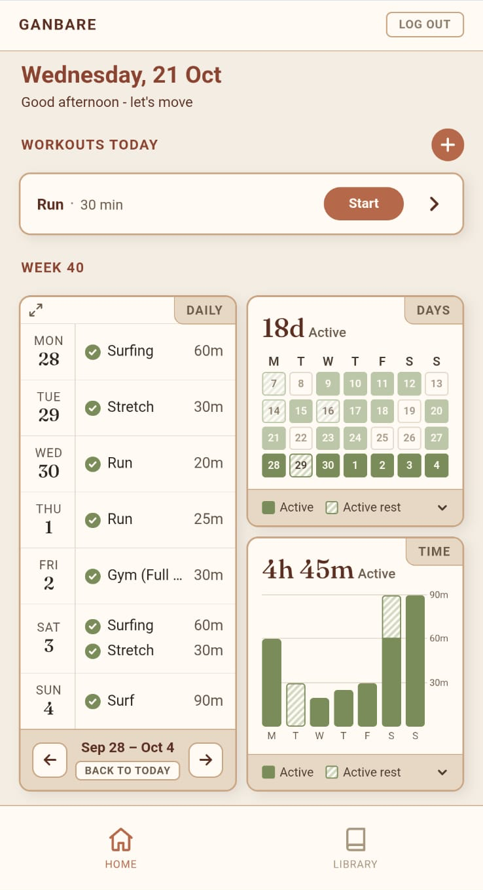

Scratch file · not part of the site
Four ways to show the Ganbare topic on the Journal page, in place of the current text row between two lines. Each one uses colours and shapes already on the site (the project facts outline, the nav-rail gradient, the pill buttons), so it should sit comfortably next to Case Studies & Projects.
Option A — Outlined card
Closest to the current site. Same rounded outline as the Role/Users/Platform/Status box, with a small blue "Live" tag as the colour accent. Quietest of the four.
What changed in my projects after the case study was written, and why.
Ganbare
Training app — updates since the case study
Option B — Gradient card
Fills the card with the blue-to-warm-yellow gradient from the case study's navigation panel. Most colourful; ties the journal visually to the case study it follows on from.
What changed in my projects after the case study was written, and why.
Ganbare
Training app — updates since the case study
Option C — Image card
Adds a screenshot of the app on a gradient panel, beside the text (stacked on phones). Most like a portfolio project tile, and gives the page something visual. Uses the homepage image that was removed from the first post.
What changed in my projects after the case study was written, and why.

Ganbare
Training app — updates since the case study
Option D — Header band + latest update
A solid blue band carries the title; underneath, a preview of the newest post so visitors see what's inside before clicking. Strongest colour, and the most informative.
What changed in my projects after the case study was written, and why.
Ganbare
Training app · Live productStarting the Ganbare journal
Where we'll document app iterations and new features.